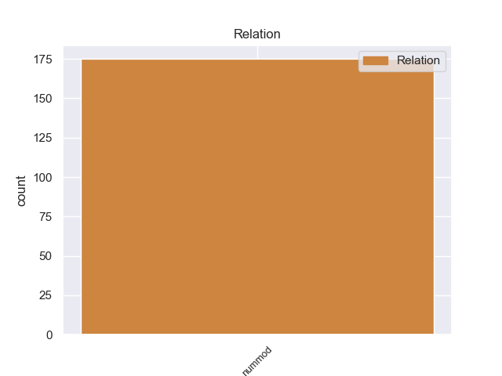
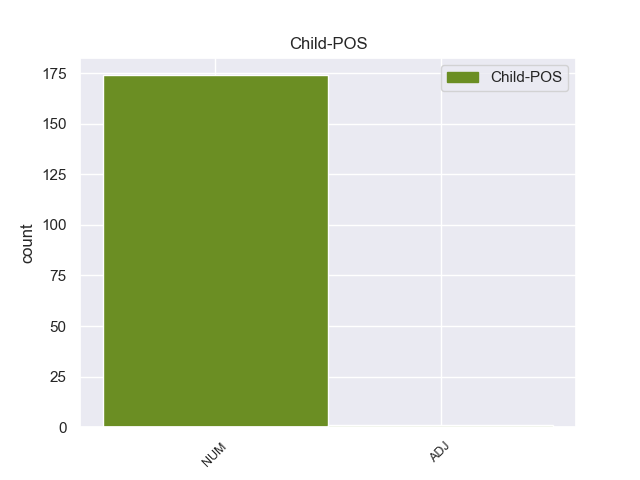

Distribution of features within this leaf



Agreement Rules sorted by frequency.
- When the dependent token is the numeric modifier(nummod) of the head token, and the dependent token is NUM.
1 « _ _ _ _ 0 _ _ _
2 Δεκαεννέα δεκαεννέα NUM _ Case=Nom|Gender=Masc|Number=Plur|NumType=Card 3 nummod _ _
3 κρατούμενοι κρατούμενος NOUN _ Case=Nom|Gender=Masc|Number=Plur 0 _ _ _
4 , _ _ _ _ 0 _ _ _
5 μέλη _ _ _ _ 0 _ _ _
6 της _ _ _ _ 0 _ _ _
7 Αλ _ _ _ _ 0 _ _ _
8 Κάιντα _ _ _ _ 0 _ _ _
9 και _ _ _ _ 0 _ _ _
10 της _ _ _ _ 0 _ _ _
11 Ανσάρ _ _ _ _ 0 _ _ _
12 αλ-Σούνα _ _ _ _ 0 _ _ _
13 , _ _ _ _ 0 _ _ _
14 απέδρασαν _ _ _ _ 0 _ _ _
15 σ _ _ _ _ 0 _ _ _
16 τις _ _ _ _ 0 _ _ _
17 03:30 _ _ _ _ 0 _ _ _
18 από _ _ _ _ 0 _ _ _
19 τη _ _ _ _ 0 _ _ _
20 φυλακή _ _ _ _ 0 _ _ _
21 , _ _ _ _ 0 _ _ _
22 αφού _ _ _ _ 0 _ _ _
23 αποκοίμισαν _ _ _ _ 0 _ _ _
24 τους _ _ _ _ 0 _ _ _
25 δεσμοφύλακες _ _ _ _ 0 _ _ _
26 και _ _ _ _ 0 _ _ _
27 τους _ _ _ _ 0 _ _ _
28 υπόλοιπους _ _ _ _ 0 _ _ _
29 κρατούμενους _ _ _ _ 0 _ _ _
30 . _ _ _ _ 0 _ _ _
1 Τελικά _ _ _ _ 0 _ _ _
2 όμως _ _ _ _ 0 _ _ _
3 το _ _ _ _ 0 _ _ _
4 1942 _ _ _ _ 0 _ _ _
5 , _ _ _ _ 0 _ _ _
6 ο _ _ _ _ 0 _ _ _
7 Γιόσιπ _ _ _ _ 0 _ _ _
8 Μπροζ _ _ _ _ 0 _ _ _
9 Τίτο _ _ _ _ 0 _ _ _
10 με _ _ _ _ 0 _ _ _
11 διακήρυξή _ _ _ _ 0 _ _ _
12 του _ _ _ _ 0 _ _ _
13 , _ _ _ _ 0 _ _ _
14 αποφάσισε _ _ _ _ 0 _ _ _
15 πως _ _ _ _ 0 _ _ _
16 η _ _ _ _ 0 _ _ _
17 " _ _ _ _ 0 _ _ _
18 Γιουγκοσλαβική _ _ _ _ 0 _ _ _
19 Μακεδονία _ _ _ _ 0 _ _ _
20 " _ _ _ _ 0 _ _ _
21 θα _ _ _ _ 0 _ _ _
22 αποτελούσε _ _ _ _ 0 _ _ _
23 μία _ _ _ _ 0 _ _ _
24 από _ _ _ _ 0 _ _ _
25 τις _ _ _ _ 0 _ _ _
26 έξι _ _ _ _ 0 _ _ _
27 ομόσπονδες ομόσπονδα ADJ _ Case=Acc|Gender=Masc|Number=Plur 28 nummod _ _
28 δημοκρατίες δημοκρατία NOUN _ Case=Acc|Gender=Masc|Number=Plur 0 _ _ _
29 που _ _ _ _ 0 _ _ _
30 θα _ _ _ _ 0 _ _ _
31 αποτελούσαν _ _ _ _ 0 _ _ _
32 την _ _ _ _ 0 _ _ _
33 ενιαία _ _ _ _ 0 _ _ _
34 Γιουγκοσλαβία _ _ _ _ 0 _ _ _
35 , _ _ _ _ 0 _ _ _
36 ενώ _ _ _ _ 0 _ _ _
37 οι _ _ _ _ 0 _ _ _
38 κάτοικοι _ _ _ _ 0 _ _ _
39 της _ _ _ _ 0 _ _ _
40 περιοχής _ _ _ _ 0 _ _ _
41 θα _ _ _ _ 0 _ _ _
42 αναγνωρίζονταν _ _ _ _ 0 _ _ _
43 ως _ _ _ _ 0 _ _ _
44 μια _ _ _ _ 0 _ _ _
45 νέα _ _ _ _ 0 _ _ _
46 σλαβική _ _ _ _ 0 _ _ _
47 εθνότητα _ _ _ _ 0 _ _ _
48 , _ _ _ _ 0 _ _ _
49 τη _ _ _ _ 0 _ _ _
50 μακεδονική _ _ _ _ 0 _ _ _
51 . _ _ _ _ 0 _ _ _
Disagree Examples:
1 Μετά _ _ _ _ 0 _ _ _
2 τον _ _ _ _ 0 _ _ _
3 θάνατο _ _ _ _ 0 _ _ _
4 του _ _ _ _ 0 _ _ _
5 Οσάμα _ _ _ _ 0 _ _ _
6 μπιν _ _ _ _ 0 _ _ _
7 Λάντεν _ _ _ _ 0 _ _ _
8 , _ _ _ _ 0 _ _ _
9 οκτώ _ _ _ _ 0 _ _ _
10 σ _ _ _ _ 0 _ _ _
11 τους _ _ _ _ 0 _ _ _
12 δέκα δέκα NUM NUM Case=Acc|Gender=Neut|Number=Plur|NumType=Card 13 nummod _ _
13 Γάλλους Γάλλος PROPN PROPN Case=Acc|Gender=Masc|Number=Plur 0 _ _ _
14 πίστευαν _ _ _ _ 0 _ _ _
15 ότι _ _ _ _ 0 _ _ _
16 η _ _ _ _ 0 _ _ _
17 τρομοκρατική _ _ _ _ 0 _ _ _
18 απειλή _ _ _ _ 0 _ _ _
19 θα _ _ _ _ 0 _ _ _
20 αυξηθεί _ _ _ _ 0 _ _ _
21 . _ _ _ _ 0 _ _ _
1 Επίσης _ _ _ _ 0 _ _ _
2 η _ _ _ _ 0 _ _ _
3 Δυτικοαφρικανική _ _ _ _ 0 _ _ _
4 Ένωση _ _ _ _ 0 _ _ _
5 στέλνει _ _ _ _ 0 _ _ _
6 άλλους _ _ _ _ 0 _ _ _
7 δύο _ _ _ _ 0 _ _ _
8 χιλιάδες χιλιάδα NUM NUM Case=Acc|Gender=Fem|Number=Plur|NumType=Sets 9 nummod _ _
9 στρατιώτες στρατιώτης NOUN NOUN Case=Acc|Gender=Masc|Number=Plur 0 _ _ _
10 , _ _ _ _ 0 _ _ _
11 σ _ _ _ _ 0 _ _ _
12 το _ _ _ _ 0 _ _ _
13 πλαίσιο _ _ _ _ 0 _ _ _
14 δύναμης _ _ _ _ 0 _ _ _
15 που _ _ _ _ 0 _ _ _
16 έχει _ _ _ _ 0 _ _ _
17 εξουσιοδοτηθεί _ _ _ _ 0 _ _ _
18 από _ _ _ _ 0 _ _ _
19 τα _ _ _ _ 0 _ _ _
20 Ηνωμένα _ _ _ _ 0 _ _ _
21 Έθνη _ _ _ _ 0 _ _ _
22 . _ _ _ _ 0 _ _ _
1 Το _ _ _ _ 0 _ _ _
2 ευρώ _ _ _ _ 0 _ _ _
3 είναι _ _ _ _ 0 _ _ _
4 επίσης _ _ _ _ 0 _ _ _
5 επιτυχία _ _ _ _ 0 _ _ _
6 της _ _ _ _ 0 _ _ _
7 Ευρωπαϊκής _ _ _ _ 0 _ _ _
8 Κεντρικής _ _ _ _ 0 _ _ _
9 Τράπεζας _ _ _ _ 0 _ _ _
10 , _ _ _ _ 0 _ _ _
11 των _ _ _ _ 0 _ _ _
12 χρηματοπιστωτικών _ _ _ _ 0 _ _ _
13 ιδρυμάτων _ _ _ _ 0 _ _ _
14 , _ _ _ _ 0 _ _ _
15 των _ _ _ _ 0 _ _ _
16 εκατοντάδων _ _ _ _ 0 _ _ _
17 χιλιάδων χιλιάδα NUM NUM Case=Gen|Gender=Fem|Number=Plur|NumType=Sets 19 nummod _ _
18 ανώνυμων _ _ _ _ 0 _ _ _
19 πολιτών πολίτης NOUN NOUN Case=Gen|Gender=Masc|Number=Plur 0 _ _ _
20 που _ _ _ _ 0 _ _ _
21 δούλεψαν _ _ _ _ 0 _ _ _
22 την _ _ _ _ 0 _ _ _
23 πρώτη _ _ _ _ 0 _ _ _
24 Ιανουαρίου _ _ _ _ 0 _ _ _
25 , _ _ _ _ 0 _ _ _
26 και _ _ _ _ 0 _ _ _
27 επιτυχία _ _ _ _ 0 _ _ _
28 επίσης _ _ _ _ 0 _ _ _
29 , _ _ _ _ 0 _ _ _
30 πρέπει _ _ _ _ 0 _ _ _
31 να _ _ _ _ 0 _ _ _
32 το _ _ _ _ 0 _ _ _
33 αναγνωρίσουμε _ _ _ _ 0 _ _ _
34 , _ _ _ _ 0 _ _ _
35 του _ _ _ _ 0 _ _ _
36 Pierre _ _ _ _ 0 _ _ _
37 Werner _ _ _ _ 0 _ _ _
38 , _ _ _ _ 0 _ _ _
39 του _ _ _ _ 0 _ _ _
40 Valéry _ _ _ _ 0 _ _ _
41 Giscard _ _ _ _ 0 _ _ _
42 d' _ _ _ _ 0 _ _ _
43 Estaing _ _ _ _ 0 _ _ _
44 , _ _ _ _ 0 _ _ _
45 του _ _ _ _ 0 _ _ _
46 Helmut _ _ _ _ 0 _ _ _
47 Schmidt _ _ _ _ 0 _ _ _
48 , _ _ _ _ 0 _ _ _
49 του _ _ _ _ 0 _ _ _
50 François _ _ _ _ 0 _ _ _
51 Mitterrand _ _ _ _ 0 _ _ _
52 , _ _ _ _ 0 _ _ _
53 του _ _ _ _ 0 _ _ _
54 Helmut _ _ _ _ 0 _ _ _
55 Kohl _ _ _ _ 0 _ _ _
56 , _ _ _ _ 0 _ _ _
57 του _ _ _ _ 0 _ _ _
58 Ruud _ _ _ _ 0 _ _ _
59 Lubbers _ _ _ _ 0 _ _ _
60 , _ _ _ _ 0 _ _ _
61 του _ _ _ _ 0 _ _ _
62 Giulio _ _ _ _ 0 _ _ _
63 Andreotti _ _ _ _ 0 _ _ _
64 , _ _ _ _ 0 _ _ _
65 του _ _ _ _ 0 _ _ _
66 John _ _ _ _ 0 _ _ _
67 Major _ _ _ _ 0 _ _ _
68 , _ _ _ _ 0 _ _ _
69 του _ _ _ _ 0 _ _ _
70 Felipe _ _ _ _ 0 _ _ _
71 Gonzαlez _ _ _ _ 0 _ _ _
72 και _ _ _ _ 0 _ _ _
73 επίσης _ _ _ _ 0 _ _ _
74 του _ _ _ _ 0 _ _ _
75 Jacques _ _ _ _ 0 _ _ _
76 Santer _ _ _ _ 0 _ _ _
77 , _ _ _ _ 0 _ _ _
78 ως _ _ _ _ 0 _ _ _
79 Προέδρου _ _ _ _ 0 _ _ _
80 της _ _ _ _ 0 _ _ _
81 Επιτροπής _ _ _ _ 0 _ _ _
82 . _ _ _ _ 0 _ _ _
1 Δεκάδες δεκάδα NUM NUM Case=Nom|Gender=Fem|Number=Plur|NumType=Sets 2 nummod _ _
2 άτομα άτομο NOUN NOUN Case=Nom|Gender=Neut|Number=Plur 0 _ _ _
3 τραυματίσθηκαν _ _ _ _ 0 _ _ _
4 και _ _ _ _ 0 _ _ _
5 από _ _ _ _ 0 _ _ _
6 τις _ _ _ _ 0 _ _ _
7 δύο _ _ _ _ 0 _ _ _
8 πλευρές _ _ _ _ 0 _ _ _
9 και _ _ _ _ 0 _ _ _
10 γι' _ _ _ _ 0 _ _ _
11 αυτό _ _ _ _ 0 _ _ _
12 ο _ _ _ _ 0 _ _ _
13 αριθμός _ _ _ _ 0 _ _ _
14 των _ _ _ _ 0 _ _ _
15 νεκρών _ _ _ _ 0 _ _ _
16 αναμένεται _ _ _ _ 0 _ _ _
17 να _ _ _ _ 0 _ _ _
18 αυξηθεί _ _ _ _ 0 _ _ _
19 . _ _ _ _ 0 _ _ _
1 Εδώ _ _ _ _ 0 _ _ _
2 θα _ _ _ _ 0 _ _ _
3 αναφερθώ _ _ _ _ 0 _ _ _
4 σε _ _ _ _ 0 _ _ _
5 ένα ένας NUM NUM Case=Acc|Gender=Fem|Number=Sing|NumType=Card 7 nummod _ _
6 μόνο _ _ _ _ 0 _ _ _
7 παράδειγμα παράδειγμα NOUN NOUN Case=Acc|Gender=Neut|Number=Sing 0 _ _ _
8 και _ _ _ _ 0 _ _ _
9 συγκεκριμένα _ _ _ _ 0 _ _ _
10 σ _ _ _ _ 0 _ _ _
11 τη _ _ _ _ 0 _ _ _
12 ρύθμιση _ _ _ _ 0 _ _ _
13 για _ _ _ _ 0 _ _ _
14 την _ _ _ _ 0 _ _ _
15 εφαρμογή _ _ _ _ 0 _ _ _
16 της _ _ _ _ 0 _ _ _
17 αρχής _ _ _ _ 0 _ _ _
18 της _ _ _ _ 0 _ _ _
19 αναλογικότητας _ _ _ _ 0 _ _ _
20 κατά _ _ _ _ 0 _ _ _
21 την _ _ _ _ 0 _ _ _
22 αποποίηση _ _ _ _ 0 _ _ _
23 της _ _ _ _ 0 _ _ _
24 ανάκτησης _ _ _ _ 0 _ _ _
25 κονδυλίων _ _ _ _ 0 _ _ _
26 . _ _ _ _ 0 _ _ _